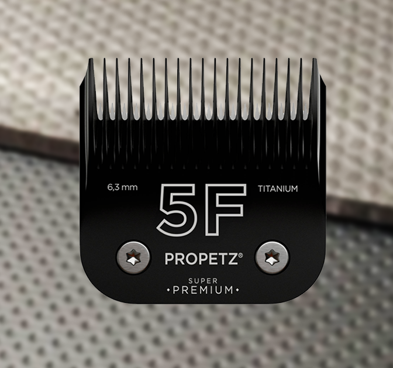
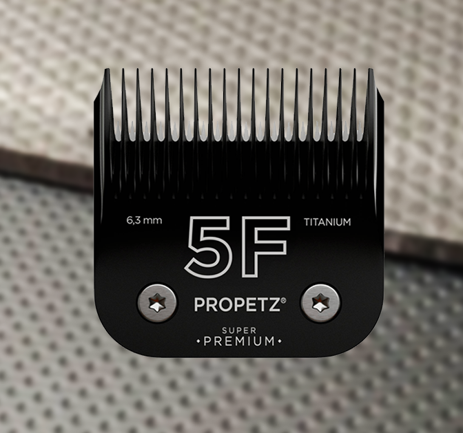

As
lâminas
de tosa variam em material, tamanho e formato para atender às
necessidades específicas de tosadores profissionais. A escolha da lâmina certa depende do tipo
de
pelagem do animal, da preferência pessoal do tosador e das condições de trabalho. É
importante
manter as lâminas limpas e bem lubrificadas para garantir um corte suave e eficaz e para
prolongar
sua vida útil
A
numeração nas lâminas de tosa indicam a altura do corte, ou seja, a quantidade de pelo
que será
deixada após a tosa. Cada número corresponde a uma altura de corte específica. Várias
marcas
fabricam lâminas de tosa, e enquanto a numeração pode ser semelhante entre elas, a qualidade,
durabilidade e características específicas podem variar.


 
